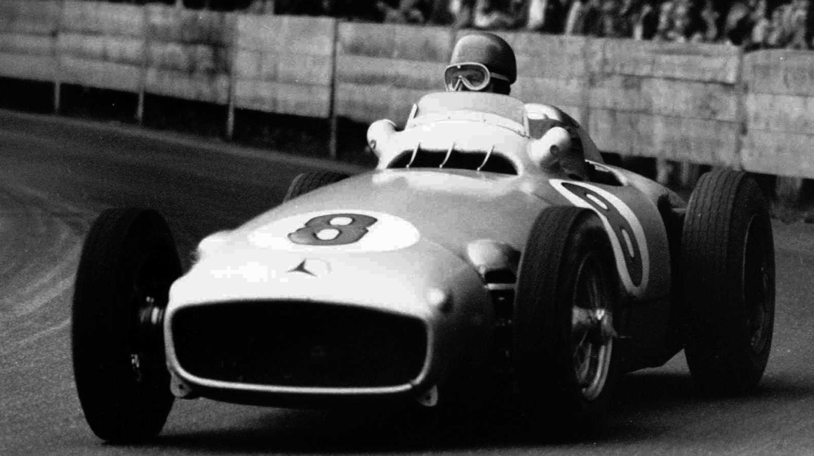
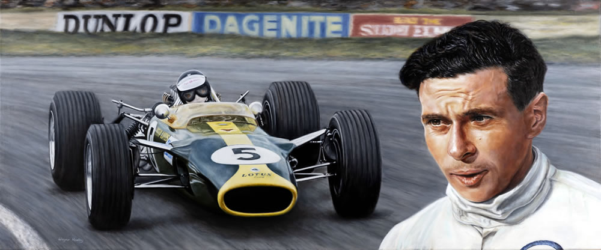
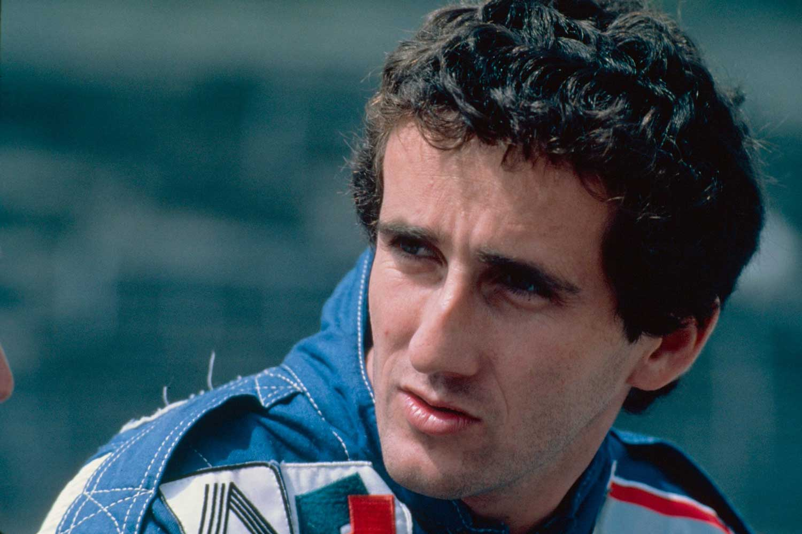
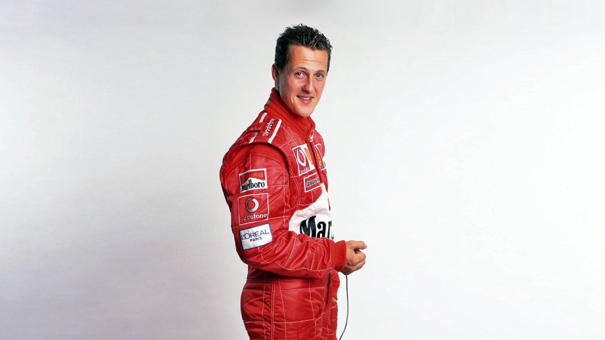
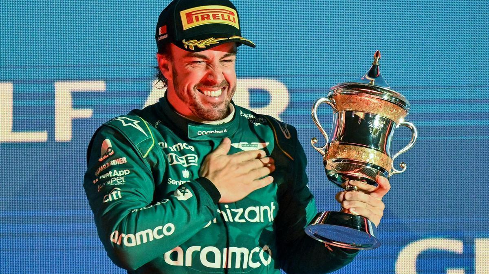
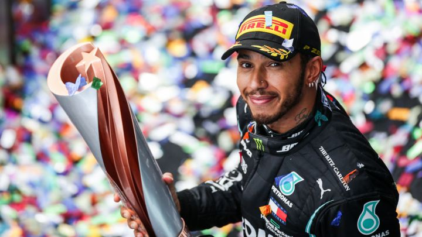
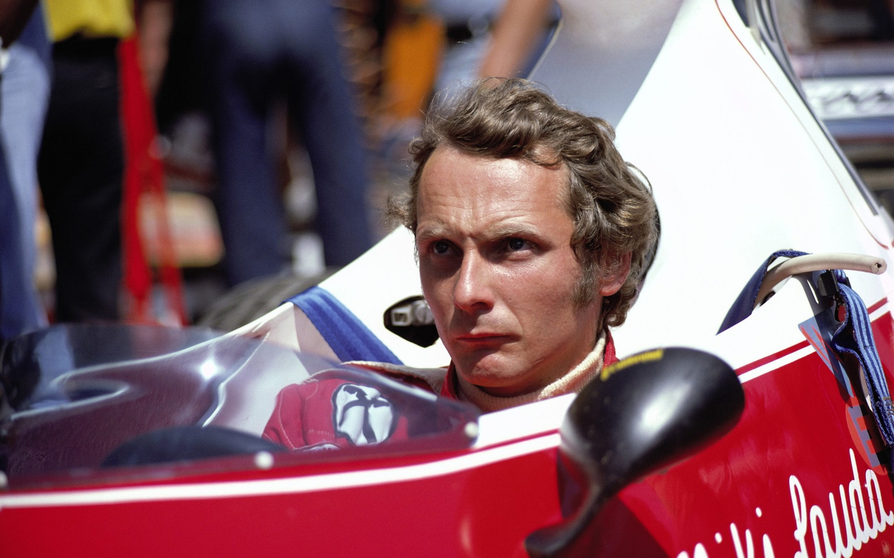
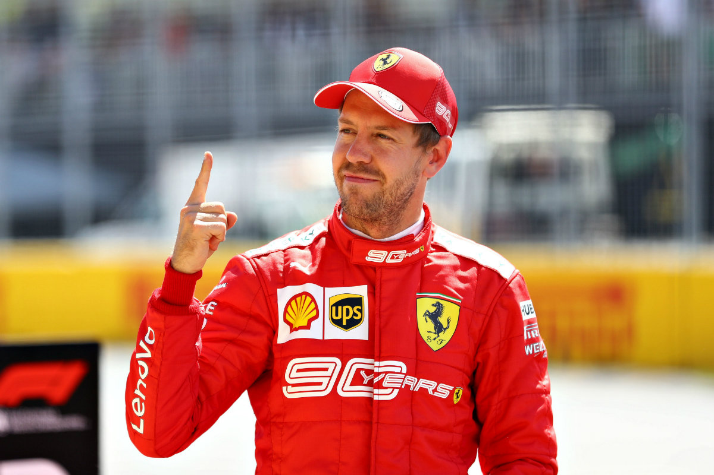

Ayrton Senna da Silva es un emblema, ya no solo del automovilismo, sino de la historia del deporte. La leyenda brasileña, idolatrada tanto en su país como en todos los rincones del planeta, elevó la Fórmula 1 a la cúspide de la popularidad entre los años 80 y 90.
Sus 11 temporadas fueron magníficas, desde sus inicios sorprendentes con Toleman en 1984, pasando por Lotus y llegando a la gloria con McLaren-Honda, hasta poner fin a su trayectoria automovilística con Williams y su desafortunado accidente mortal en el GP de San Marino de 1994.
Para el recuerdo quedarán sus duelos al límite con Alain Prost, sus recitales mágicos en las calles de Montecarlo y, por supuesto, su legado infinito. Cualquier persona que le vio correr fue consciente de que Senna era una estrella y de que sus tres Mundiales nunca fueron suficientes para estimar su valor incalculable.
Después de su fallecimiento en Imola, Ayrton ha servido de inspiración a decenas de generaciones, llegando a su punto más álgido con el reinado de Lewis Hamilton, que hegemonizó la Fórmula 1 con los colores de Senna en su casco.

El astro del automovilismo argentino marcó la era de los años 50. Fangio fue la demostración perfecta de la polivalencia, y es que obtuvo cinco Mundiales con cuatro marcas diferentes: Alfa Romeo, Mercedes, Ferrari y Maserati.
Sus habilidades con distintas máquinas han permitido que sea valorado por diferentes estudios como el mejor piloto de la historia, aun teniendo en cuenta que el estado argentino siempre velaba para que Fangio compitiese con el mejor bólido año tras año.
Habiendo pasado casi siete décadas de su pentacampeonato, el de Balcarce sigue siendo el tercer piloto más laureado de la historia de la F1, tan solo superado por Lewis Hamilton y Michael Schumacher.

El mejor piloto escocés de la historia fue la mayor prueba de fidelidad que se recuerda en la Fórmula 1. Clark siempre corrió para los colores verde y amarillo de Lotus, equipo con el que destacó y brilló en la década de los 60.
Su inteligencia y delicadeza a la hora de pilotar le llevó a alcanzar dos Mundiales y 25 victorias con un Lotus que no siempre fue el más competitivo. Pero el antiguo granjero, que nunca renunció a sus ovejas y que, para él, las carreras eran el hobby del fin de semana, poseía la cualidad de ser rápido con cualquier hierro. Clark, el gran caballero de la F1 que incluso conquistó las 500 Millas de Indianápolis, marcó toda una década.
Su fallecimiento fue prematuro, al igual que el de Senna. Por lo que, probablemente, el palmarés del escocés habría sido más amplio de lo que ya fue de por sí.

"El Profesor" también destacó por ganar carreras con cuatro escuderías diferentes: Renault, McLaren, Ferrari y Williams. Prost dominó gran parte de la década de los 80, obteniendo sus cuatro títulos desde 1985 hasta 1993.
El francés siempre plantó cara a todos sus compañeros de equipo, algunos de ellos campeones del mundo: Lauda, Hill, Rosberg, Mansell y Senna.
Frío, calculador, preciso e inteligente, sacó de quicio en más de una ocasión a Ayrton, tanto en McLaren-Honda como años después cuando Alain fichó por Ferrari. Suzuka siempre les separó. Pero, cuando Prost se retiró a lo grande, proclamándose tetracampeón en 1993, el respeto y la admiración entre ambas leyendas de la F1 alcanzó un nivel máximo hasta el fallecimiento del brasileño a comienzos de la temporada siguiente.

Considerado por muchos como el mejor corredor de todos los tiempos, fue el piloto más laureado de la historia junto a Lewis Hamilton con 7 títulos y se convirtió en la figura más influyente de la historia de Ferrari.
Michael despertó la pasión de los tifosi en todo el mundo y levantó a una Ferrari en reconstrucción.
Ya en sus comienzos, brilló con Jordan y logró sus primeros Mundiales con Benetton. Su fichaje arriesgado por la formación de Maranello se convirtió en un acierto absoluto, dominando la década de los 2000 con 5 campeonatos consecutivos hasta el auge de Fernando Alonso. Schumacher lideró la época dorada de Ferrari con un monoplaza pletórico y dominante.
Su regreso a la F1 en 2010 con Mercedes se prolongó hasta 2012. Su compañero, Nico Rosberg, le venció en aquellas temporadas hasta la retirada definitiva del "Káiser".

Algunos expertos le colocan como el mejor piloto de la historia, por delante de los Schumacher, Senna, Prost, Fangio y Clark. Este último, precisamente, compartió tanto la nacionalidad como el asfalto con Jackie durante algunos años a mediados de los 60.
Stewart fue capaz de ganar 3 campeonatos con coches que, a priori, no eran potenciales ganadores. Demostró su valía con Matra en 1969 y posteriormente con Tyrrell en 1971 y 1973 y respectivamente.
Sus presiones para convertir la Fórmula 1 en un deporte más seguro supusieron la integración de cascos integrales, la implementación de monos ignífugos, la evolución de los circuitos y la mejora de la atención médica en cada Gran Premio.
Su pasión por las carreras le hizo crear su propio equipo, Stewart Grand Prix, logrando una dinámica ascendente entre 1997 y 1999, hasta que Jaguar compró la estructura.

El mejor piloto español de la historia del automovilismo tiene menos títulos de los que se merece, y es que sus dos Mundiales no hacen justicia a su talento.
En contadas ocasiones, Alonso ha pilotado el mejor coche de la parrilla. Probablemente, tan solo a mediados de los 2000. Fernando alcanzó la gloria en 2005 y en 2006, obteniendo ambos campeonatos en Brasil.
Quienes le han visto correr a lo largo de su trayectoria en la F1, aseguran que sus mejores años fueron con Ferrari (2010-2014), especialmente la temporada 2012. El asturiano estuvo a punto de vencer al todopoderoso Red Bull de Sebastian Vettel con un Ferrari bastante inferior en una de las mejores actuaciones individuales que se recuerdan en la historia reciente del automovilismo. Posteriormente, sus malas decisiones le hicieron correr con máquinas menos competitivas hasta forzar su retirada en 2018.
El bicampeón probó suerte en otras competiciones como el Dakar, la IndyCar y el Mundial de Resistencia. En esta época, consiguió ganar en dos ocasiones las 24 Horas de Le Mans y se proclamó campeón del WEC con Toyota.
Alonso regresó a la F1 en 2021 gracias a Alpine y todavía continúa en activo, a pesar de su debut en 2001.

Hamilton es el piloto con más victorias y más poles en la historia de la Fórmula 1, alcanzando el centenar en ambos casos.
El inglés ha roto cualquier estadística en el deporte. Tan solo le falta superar un récord: el número de Mundiales. Actualmente, acumula 7, al igual que Michael Schumacher. Su talento es innegable, pero hay que contarlo todo.
Es el máximo beneficiado de la hibridación de la F1. Desde 2014, ha competido con el mejor monoplaza de la parrilla y ha ganado todos los Mundiales desde entonces, salvo la excepción de 2016 (Nico Rosberg) y 2021-2022 (Max Verstappen).
En la era de los V8 atmosféricos, Hamilton igualó en puntos a Alonso en su debut con McLaren en 2007 y venció en sus rivalidades particulares a Kovalainen y a Button. Aunque Jenson le superó en 2011 en un año en el que Lewis acabó desquiciado por Felipe Massa. Precisamente, fue al brasileño a quien le quitó el título en 2008 en Interlagos, obteniendo uno de los campeonatos más épicos de la historia. Hamilton sigue acumulando éxitos en la actualidad.

Lauda es el mayor ejemplo de superación que leerás en este artículo. Niki es considerado el primer piloto moderno de la Fórmula 1. Su inteligencia y su régimen de entrenamiento contrastaba con la pasividad de los gentleman drivers.
El piloto austríaco poseía un talento descomunal, aunque tenía un don mayor: el arte de entender la ingeniería. Sus dotes como configurador levantaron a Ferrari en la década de los 70, llegando a obtener dos títulos con los italianos.
Su accidente espeluznante en Nürburgring en el año 1976 casi le hizo perder la vida. Sus quemaduras faciales le marcaron para siempre y, desde entonces, fue reconocido por su característica gorra roja. Ese mismo año regresó, aunque el Mundial se decantó de manera heroica a favor de James Hunt. Un lustro después, el aviador Lauda fichó por McLaren y consiguió el tricampeonato en la temporada 1983, imponiéndose por medio punto sobre su compañero Alain Prost. Un año más tarde se retiró de la Fórmula 1.
Su cargo más reciente fue el de consultor de Mercedes hasta su fallecimiento en 2019, dejando un legado de grandes magnitudes.

La imagen de Sebastian Vettel arrodillado ante el RB9 después de lograr su cuarto título mundial consecutivo de manera matemática lo define todo. El alemán arrolló desde 2010 hasta 2013. Especialmente, en los años impares. La combinación Vettel - Red Bull era perfecta, hasta la llegada de la hibridación en 2014. Un año más tarde, el tetracampeón del mundo fichó por el equipo de sus sueños, Ferrari. Sin embargo, se marchó de la Scuderia como Fernando Alonso: frustrado por no haber podido conseguir un título vestido de rojo. Su última etapa en la F1 la está pasando en Aston Martin, aunque el mal rendimiento del monoplaza británico podría precipitar la retirada de toda una leyenda del automovilismo. 